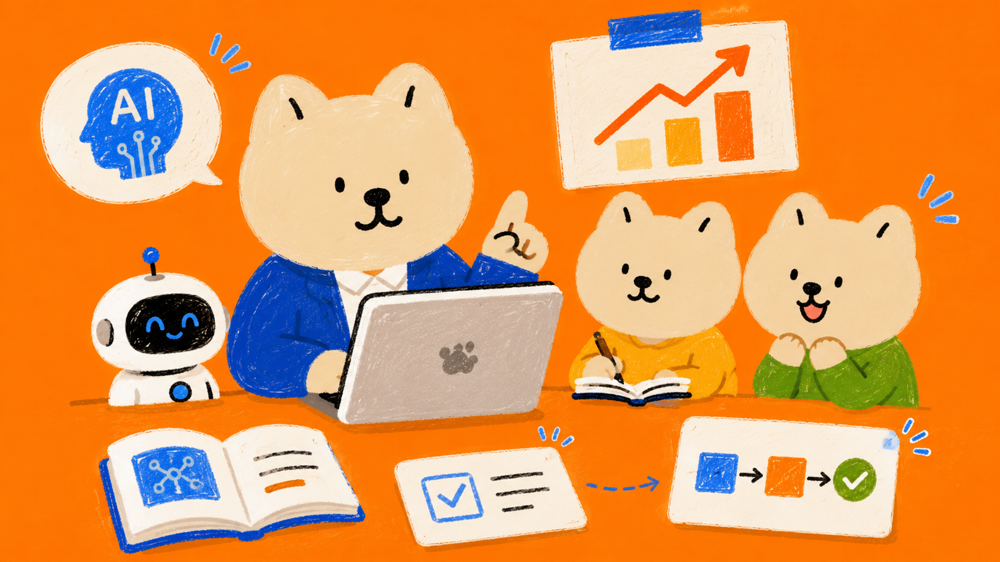
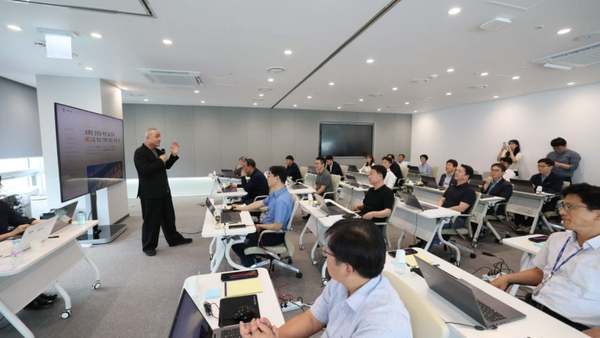
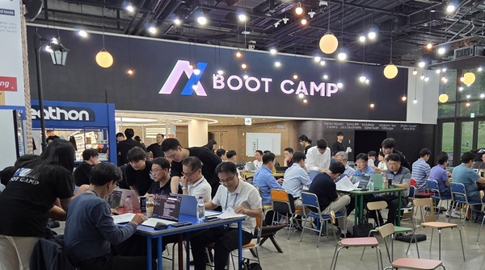
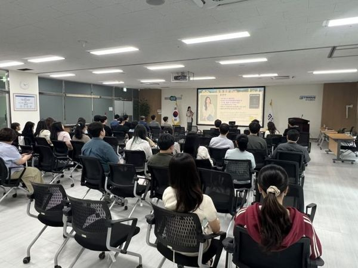

리더가 먼저 배우고 실무로 증명하는 기업들의 AI·AX 교육 트렌드
대기업부터 공공기관까지 경영진의 AI 문해력을 높이고, 임직원이 실무에서 직접 AI 에이전트를 구축하도록 돕는 실습 중심의 AX 교육 흐름을 짚어봅니다.

🔎 HRD 인사이트
최근 기업들의 AI 교육은 단순한 개념 소개를 벗어나 경영진의 의사결정 역량을 높이고 실무자가 현업의 문제를 직접 해결하는 '실습 및 성과 연계형'으로 진화하고 있어요. 특히 리더십 교육과 실무진의 부트캠프 형식을 결합해 조직 전반에 AI 활용 문화를 내재화하려는 움직임이 돋보입니다. 기술 활용도가 높아짐에 따라 AI 윤리와 보안 교육도 필수적인 설계 요소로 자리 잡고 있는 상황이에요.
- 💻 실무 중심의 AI 부트캠프와 바이브 코딩 교육의 확산
- 👑 경영진의 AI 문해력 향상을 위한 리더십 맞춤형 AX 집중 과정 도입
- 🔒 안전한 기술 활용을 위한 AI 윤리헌장 선포 및 보안 교육의 필수화
🗞️ 함께 보면 좋은 기사

코레일, 경영진 대상 실습형 AI 교육 실시
코레일은 경영진 20여 명을 대상으로 생성형 AI 프롬프트 설계와 실무형 AI 봇 시연을 포함한 실습형 교육을 진행했어요. 철도 안전과 고객 서비스 등 실제 업무 적용 방안을 다루었으며, 책임 있는 AI 사용을 위한 'AI 윤리헌장'도 함께 선포했답니다.
현대글로비스, 임직원들 AI 역량 강화 위한 교육 시행
현대글로비스는 임직원들이 AI 에이전트와 바이브 코딩을 활용해 현업 문제를 해결하는 'AI 부트캠프'를 운영했어요. 선박 운항 포털 구축이나 중고차 맞춤 추천처럼 실제 업무 프로세스를 개선하는 구체적인 성과를 도출해 냈습니다.

삼성, 조직 DNA 혁신하는 ‘AI 대전환‘ 나서
삼성그룹은 전 관계사 업무에 AI를 전면 도입하며 사장단과 임원을 대상으로 한 'AX 부트캠프' 집중 교육을 시작했어요. 전 직원을 대상으로 교육을 확대하는 동시에 AI 전담 조직을 신설하여 조직 DNA 자체를 AI 중심으로 재편하고 있습니다.

경기교통공사, AI·데이터 분석 역량 강화 교육 실시
경기교통공사는 전 직원을 대상으로 ChatGPT 맞춤 설정과 프롬프트 작성, NotebookLM 활용법 등을 다룬 실습 교육을 실시했어요. 실무 활용법과 더불어 개인정보 보호와 보안 유의사항을 함께 다루어 안전한 활용 문화를 다졌습니다.
💡 정리하면
최근 AI 교육의 핵심은 경영진의 솔선수범과 실무진의 즉각적인 현업 적용에 있어요. 기업들은 조직의 체질을 바꾸기 위해 리더십 교육과 실무 부트캠프를 동시에 가동하고 있답니다. 앞으로의 교육 기획은 실제 업무 프로세스를 개선하는 방향으로 설계하고, 보안과 윤리 기준을 명확히 하는 세션을 포함해야 해요.
교육 기획할 때 활용할 포인트
- 경영진 대상 교육 설계 시, 이론 중심 강의를 줄이고 생성형 AI를 직접 조작해 보는 1~2일 밀착 실습 과정을 구성합니다.
- 실무자 교육은 단발성 특강 대신 6주 내외의 부트캠프 형태로 기획하여 현업의 데이터를 활용해 직접 결과물을 도출하도록 유도합니다.
- 개발 지식이 없는 비개발 직군을 위해 자연어로 코드를 구현하는 '바이브 코딩'이나 노코드 AI 에이전트 툴 활용 과정을 도입합니다.
- AI 활용 범위가 넓어지는 만큼 교육 과정 내에 개인정보 유출 방지 및 사내 보안 가이드라인 세션을 필수로 편성합니다.